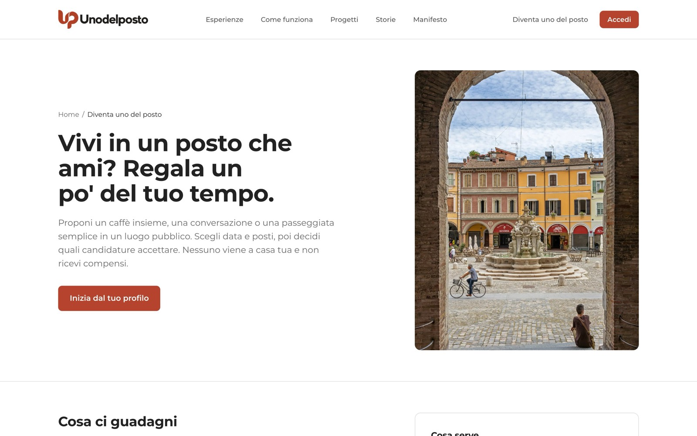
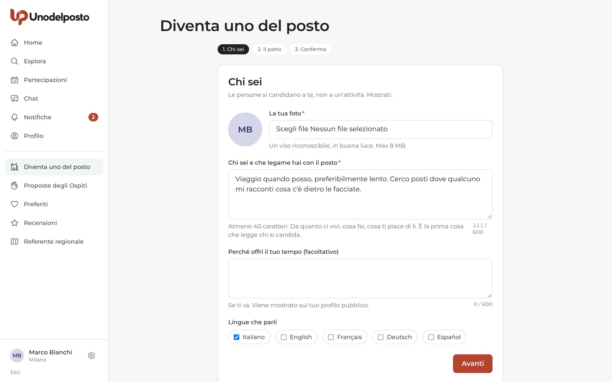
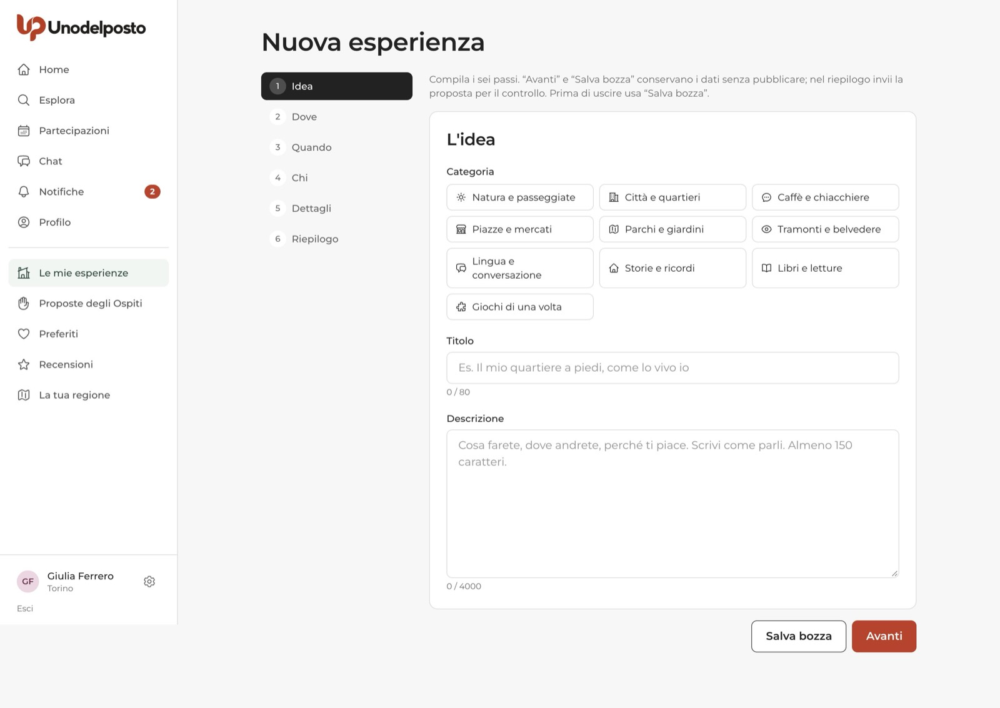
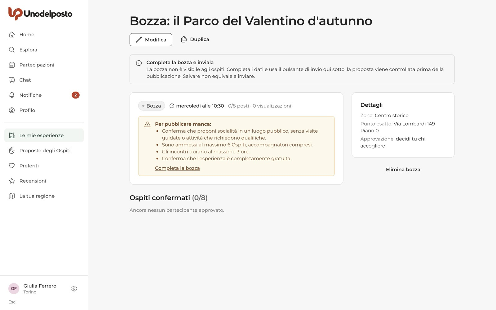
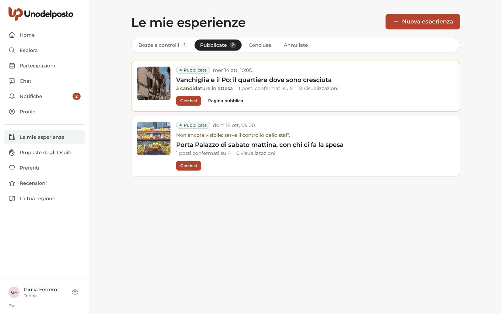
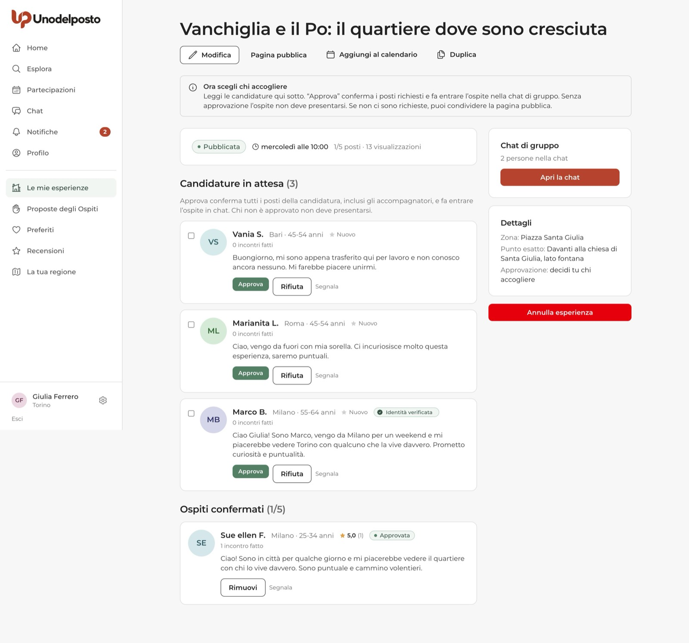
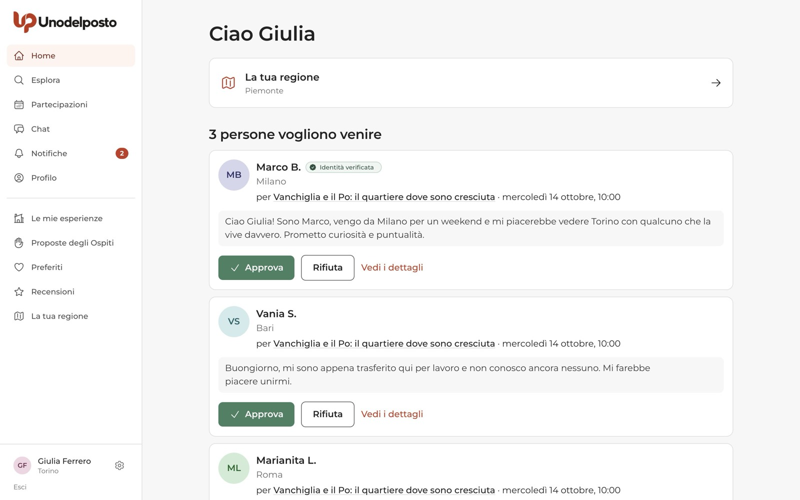
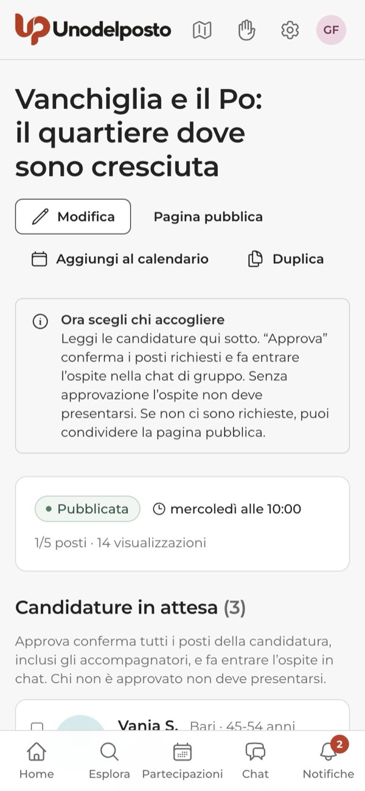
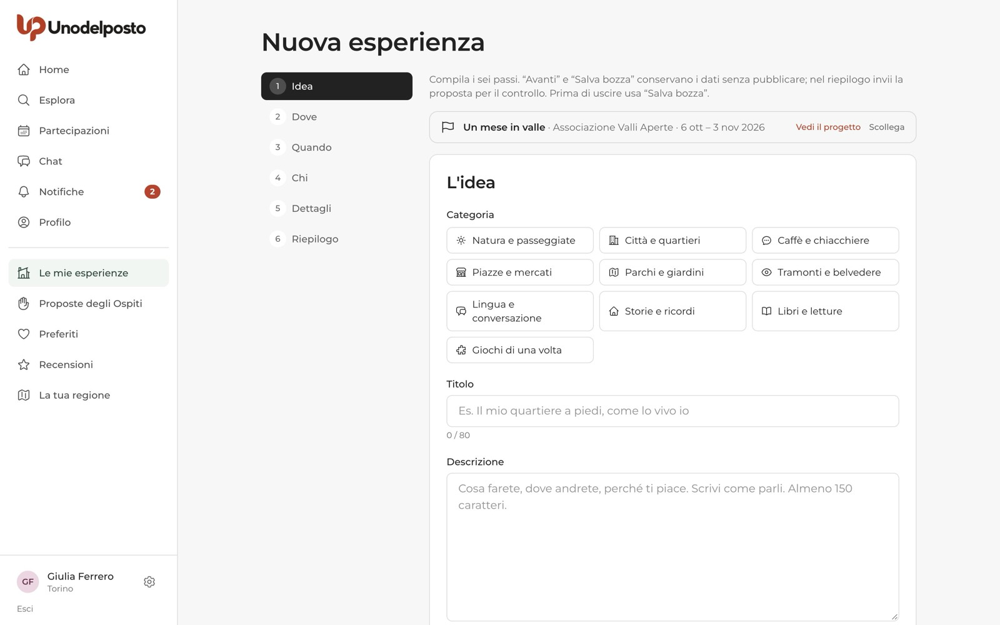
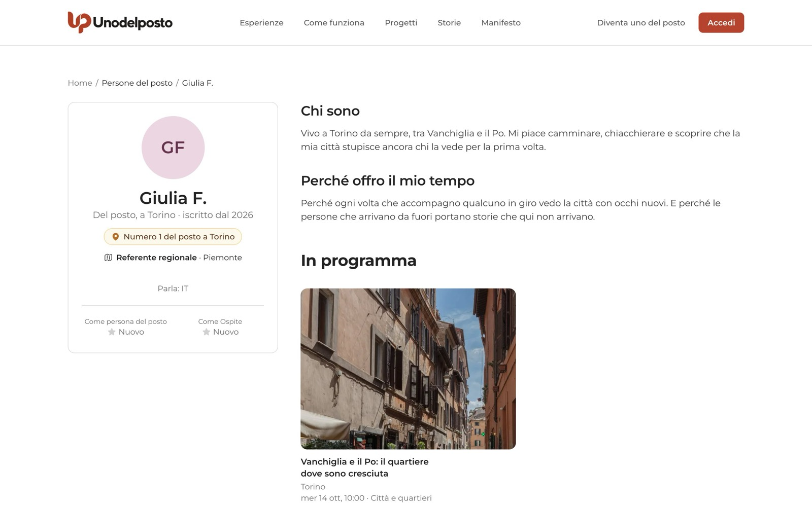

Su Unodelposto chi vive in un posto regala qualche ora del suo tempo a chi viene da fuori: un caffè in piazza, una chiacchierata, una passeggiata semplice nel quartiere. Tu proponi l'esperienza, le persone si candidano e scegli tu chi accogliere. Non ci sono soldi di mezzo, mai.
Qui trovi tutto il percorso, dall'inizio alla fine: come attivi il profilo, come prepari la proposta, cosa succede durante il controllo dello staff e come gestisci candidature, chat e incontro.
Un profilo, una volta sola
Foto, due righe su di te e il patto in cinque punti. Poi crei la prima esperienza.
Sei passi
Idea, Dove, Quando, Chi, Dettagli, Riepilogo. Puoi salvare e riprendere quando vuoi.
Controllo prima di uscire
Nella fase pilota lo staff legge ogni proposta prima che diventi visibile.
Decidi tu
Approvi o rifiuti ogni candidatura. Chi approvi entra nella chat di gruppo.
Se proponi un'esperienza
Dal primo clic su «Diventa uno del posto» fino a «Com'è andata?».
Diventare uno del posto
Ti serve un account con l'email verificata. Puoi partire dalla pagina pubblica «Diventa uno del posto», raggiungibile dal menu in alto del sito, con il pulsante Inizia dal tuo profilo. Se hai già un account, nel menu laterale dell'area personale trovi la voce Diventa uno del posto.

L'attivazione si fa una volta sola, in tre schermate:
- Chi sei. Carichi una foto (un viso riconoscibile, massimo 8 MB) e scrivi chi sei e che legame hai con il posto, almeno 40 caratteri. È la prima cosa che legge chi si candida. Puoi aggiungere perché offri il tuo tempo (facoltativo) e le lingue che parli.
- Il patto. Leggi il patto di chi è del posto e spunti tre impegni: non chiedere mai denaro né beni, essere puntuale o avvisare in chat, rispettare la privacy dei partecipanti.
- Conferma. Vedi che numero sarai tra le persone del posto del tuo comune. Se vuoi, spunti anche la casella per ricevere le Proposte degli Ospiti. Premi Diventa uno del posto e passi subito alla tua prima esperienza.

Il patto è lo stesso per tutti, in cinque punti:
- Gratis, sempre. Niente denaro, niente beni, niente «contributi spese».
- Racconto il mio posto, non lo vendo. Condividi ricordi e vita quotidiana.
- Aperto a tutti, scelgo per fiducia. Non escludi nessuno per sesso, origine, colore della pelle, religione, disabilità o per chi ama.
- Ci sono, oppure avviso. Se non puoi, lo scrivi in chat il prima possibile.
- Quello che succede nel gruppo resta nel gruppo. Niente contatti privati prima dell'incontro, niente foto di altri senza chiedere.
Cosa puoi proporre nella fase pilota
In questa prima fase Unodelposto ammette incontri di socialità semplici. Le categorie disponibili sono: Natura e passeggiate, Città e quartieri, Caffè e chiacchiere, Piazze e mercati, Parchi e giardini, Tramonti e belvedere, Lingua e conversazione, Storie e ricordi, Libri e letture, Giochi di una volta.
Valgono anche questi limiti:
- al massimo 6 Ospiti, accompagnatori compresi;
- al massimo 3 ore di incontro (minimo mezz'ora);
- solo luoghi pubblici, aperti a tutti;
- niente visite guidate a musei, chiese o monumenti, niente escursioni tecniche o attività che richiedono qualifiche;
- niente denaro: nessun compenso, mancia o acquisto obbligatorio.
Creare una nuova esperienza, passo per passo
Vai in Le mie esperienze e premi Nuova esperienza. Il modulo ha sei passi, elencati a sinistra. Con Avanti salvi il passo e prosegui, con Salva bozza conservi tutto senza pubblicare. Puoi chiudere e riprendere più tardi.

- Idea. Scegli la categoria, scrivi un titolo (fino a 80 caratteri) e una descrizione di almeno 150 caratteri: cosa farete, dove andrete, perché ti piace. Scrivi come parli.
- Dove. Scegli il comune, scrivi la Zona (pubblica) e il Punto d'incontro esatto (riservato), poi sposta il segnaposto sulla mappa.
- Quando. Data, ora di inizio e di fine. La data va scelta dal giorno dopo in poi, entro la finestra indicata sotto i campi.
- Chi. Quanti posti, l'età minima (da 18 anni in su), quanti accompagnatori può portare ogni persona e le lingue parlate durante l'incontro. Nella fase pilota approvi sempre tu ogni candidatura.
- Dettagli. Cosa portare, eventuali spese personali facoltative (per esempio «ognuno paga il suo caffè, se lo vuole»), note sull'accessibilità e le foto. La foto di copertina è obbligatoria; la galleria arriva fino a 6 foto.
- Riepilogo. Rileggi tutto, spunta le due conferme (rispetto delle Regole della comunità e gratuità completa) e premi Invia per il controllo.
Bozza e invio allo staff
Finché non premi Invia per il controllo, l'esperienza è una bozza e nessuno la vede. Salvare non equivale a inviare. Se manca qualcosa, nella pagina della bozza compare il riquadro Per pubblicare manca: con l'elenco dei punti da sistemare e il link Completa la bozza.

Dopo l'invio l'esperienza passa In attesa dello staff. Non devi inviarla di nuovo: ricevi una notifica con l'esito. Se lo staff chiede correzioni, l'esperienza torna in bozza e trovi la nota nella sua pagina.
Gli stati di un'esperienza
| Stato | Cosa significa |
|---|---|
| Bozza | La stai preparando. Non è visibile agli Ospiti. |
| In attesa dell'Ente | È collegata a un Progetto che controlla le proposte. Dopo l'Ente serve anche lo staff. |
| In attesa dello staff | L'hai inviata. Lo staff la sta leggendo; non riceve candidature. |
| Pubblicata | È visibile e riceve candidature. |
| Al completo | Tutti i posti sono confermati. Se qualcuno si ritira, i posti tornano liberi. |
| Conclusa | L'orario di fine è passato con almeno una persona approvata. |
| Scaduta | La data è passata senza persone approvate. |
| Non svolta | Hai indicato che l'incontro non c'è stato. |
| Annullata | L'hai annullata tu: l'appuntamento non è più in programma. |
| Sospesa | La moderazione l'ha fermata. Il motivo è nella pagina dell'esperienza. |
Le mie esperienze
Qui trovi tutte le tue esperienze, divise in quattro schede: Bozze e controlli, Pubblicate, Concluse e Annullate. Ogni scheda mostra lo stato, la data, le candidature in attesa, i posti confermati e le visualizzazioni. Con Gestisci apri la pagina dell'esperienza; le bozze hanno anche Continua la bozza.

La pagina Gestisci
In cima trovi i pulsanti Modifica, Pagina pubblica, Aggiungi al calendario e Duplica. Subito sotto, un riquadro ti dice qual è il prossimo passo, per esempio «Ora scegli chi accogliere».

Candidature in attesa
Per ogni candidatura vedi nome, città, fascia d'età, incontri fatti, eventuali annulli tardivi, il segno di fiducia e il messaggio di presentazione. Se la persona porta accompagnatori, vedi anche i loro nomi. Puoi:
- premere Approva: confermi tutti i posti della candidatura e la persona entra nella chat di gruppo;
- premere Rifiuta: l'Ospite riceve un messaggio neutro, il motivo (facoltativo) resta solo per te;
- spuntare più candidature e premere Approva selezionati per approvarle insieme.
Le stesse candidature compaiono anche nella tua Home, con i pulsanti Approva e Rifiuta. Quando i posti finiscono, l'esperienza passa Al completo e le candidature rimaste in attesa vengono chiuse.


Ospiti confermati
Accanto a ogni persona approvata c'è Rimuovi: devi scrivere un motivo, la persona viene avvisata ed esce dalla chat. Dopo la fine dell'incontro compare anche Non si è presentato, per segnare un'assenza. Usalo solo se sei sicuro: incide sul profilo dell'altra persona.
Chat, calendario, duplica
- Apri la chat: nel riquadro «Chat di gruppo» a destra. La chat nasce con la prima approvazione e lì arriva il punto d'incontro esatto.
- Aggiungi al calendario: Google Calendar oppure il file per Apple, Outlook e altri.
- Duplica: crea una copia come bozza, senza data. La copia deve passare di nuovo dal controllo.
Modificare un'esperienza
Con Modifica riapri i sei passi e salvi con Salva modifiche. Due regole:
- se ci sono già partecipanti approvati, puoi cambiare solo descrizione e note: data e luogo restano bloccati;
- nella fase pilota, cambiare testi, dettagli o foto richiede un nuovo controllo dello staff. Le partecipazioni già approvate non vengono annullate.
Annullare un'esperienza
Il pulsante Annulla esperienza è a destra. Se ci sono partecipanti approvati, devi scrivere il motivo: lo leggono loro, ricevono un avviso e la chat si chiude. Una bozza invece si cancella con Elimina bozza.
Dopo l'incontro: «Com'è andata?»
Finito l'incontro, nella pagina Gestisci compare il riquadro Com'è andata?. Togli la spunta a chi non è venuto e premi Sì, l'incontro c'è stato. Se invece è saltato, scegli No, non si è svolto: l'incontro non verrà contato e non si recensisce (non si può tornare indietro). Poi usa Scrivi le recensioni per recensire chi è venuto. Le recensioni compaiono quando avete scritto entrambi, oppure dopo 14 giorni.
Collegare l'esperienza a un Progetto
Se un Ente (un'associazione, un Comune, una Pro Loco) ha un Progetto attivo nel tuo comune in quelle date, al passo Quando il modulo ti chiede se vuoi collegarla. Puoi anche partire dal link di un Progetto: in cima al modulo compare il nome del Progetto, con Vedi il progetto e Scollega. Alcuni Progetti riservano le esperienze ai loro partecipanti, altri ti lasciano scegliere chi può candidarsi. Se l'Ente controlla le proposte, dopo il suo sì serve comunque il controllo dello staff. Trovi i dettagli nella guida «Enti e Progetti».

Il tuo profilo pubblico
Chi si candida guarda prima di tutto te. Sul tuo profilo pubblico compaiono il nome con l'iniziale del cognome, «Del posto, a» con il tuo comune, il tuo numero del posto, le lingue, la presentazione, il perché offri il tuo tempo (se l'hai scritto), le recensioni ricevute come persona del posto e come Ospite e le esperienze in programma. Email e telefono non compaiono mai. Puoi aggiornare foto e presentazione da Profilo.

Cosa controlla lo staff
Una lettura umana prima che l'esperienza diventi visibile.
Domande frequenti
Quanto tempo ci vuole per il controllo?
Dipende dalla coda dello staff. Non devi reinviare la proposta: ricevi una notifica appena c'è l'esito. Per questo conviene inviarla con qualche giorno di anticipo.
Posso farmi rimborsare un caffè o chiedere un contributo?
No. Su Unodelposto non passa denaro, in nessuna forma. Puoi solo indicare spese personali facoltative, che ognuno paga per sé se vuole.
Posso proporre una visita al museo del mio paese?
Non nella fase pilota. Sono escluse le visite guidate a musei, chiese, monumenti e siti culturali. Puoi raccontare i tuoi ricordi del posto durante una passeggiata in un luogo pubblico.
Ho cambiato la descrizione e l'esperienza non riceve più candidature. Perché?
Ogni modifica a testi, dettagli o foto richiede un nuovo controllo dello staff. Fino all'esito non arrivano nuove candidature; chi avevi già approvato resta confermato.
Voglio rifare la stessa esperienza in un'altra data. Devo riscriverla?
No: usa Duplica. Ottieni una bozza uguale, senza data. Scegli la nuova data e inviala per il controllo.
Qualcuno non si è presentato. Cosa faccio?
Dopo la fine dell'incontro, nel riquadro «Com'è andata?» togli la spunta a chi non è venuto, oppure usa «Non si è presentato» accanto al suo nome. Fallo solo se ne sei sicuro.
Ti serve su carta?
La stessa guida in PDF, da stampare o inviare.